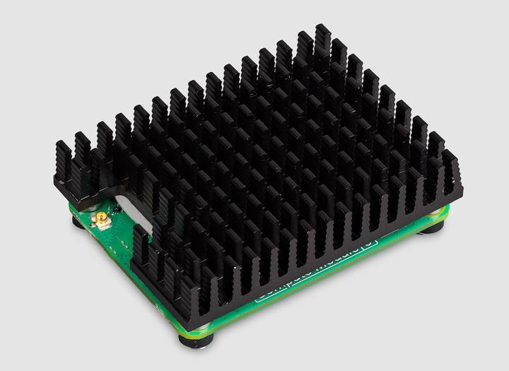
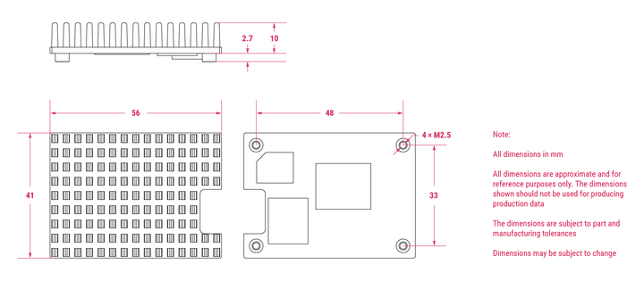

Install the CM5 cooler
The CM5 Cooler is a passive heat sink that helps dissipate heat from your CM5, improving CPU performance and longevity. We recommend that you check the cable regularly.

Figure 1. CM5 cooler
Cooler specifications
The CM5 Cooler dimensions are approximately 41 mm × 56 mm × 12.7 mm. The cooler is an aluminium heat sink with a conductive silicone pad on the bottom. Newer versions of the CM5IO Case allow both the cooler and pre-installed fan to be used inside the case at the same time. If you have an older version of the CM5IO Case, you must remove the fan from the case to allow space for the cooler.

Figure 2. CM5 cooler physical specifications
Mount a CM5 Cooler
To mount the cooler to your CM5:
- Simply remove the protective paper from the silicone pad on the bottom of cooler.
- Attach the silicone at the bottom of the cooler to the top of your CM5. Place the cooler on your CM5 such that the cutout in the cooler is above the on-board antenna (the trapezoid-shaped area on the left of a CM5) and the U.FL connector next to it (if it has one).
- Optionally, fasten screws in the mounting points found in each corner to secure the cooler. If you omit the screws, the bond between your cooler and your CM5 improves through time and use.
Related topic: Compute Module memory, storage and wireless variants